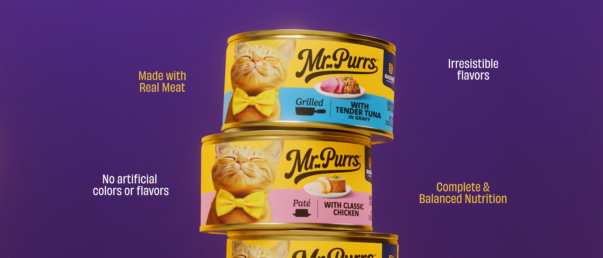

Find opportunities in human behavior
Conversations in an offline journaling community became the starting point for Time Anchor, a working five-year diary prototype.
Jovan Yan · Shanghai, China
Product Marketing · Consumer Insight · Product Building · GTM
>_ SHANGHAI >>> BEIJING >>> BOSTON >>> SHENZHENMy path has moved from cultural communication at Kuaishou, to product marketing at PepsiCo / Quaker, and then to end-to-end new product development at ZURU.
Across those roles, I learned to connect consumer signals with product decisions: shaping content around audience emotion, translating technical benefits into everyday scenarios, and coordinating research, design, cost, sampling, production, and launch.
I don’t see a strategy deck as the finish line. It is a tool for making something real.
Conversations in an offline journaling community became the starting point for Time Anchor, a working five-year diary prototype.
At ZURU, I moved ideas through consumer research, positioning, feasibility, design, sampling, production, and retail delivery.
At Quaker, I translated nutrition and ingredient benefits into relatable moments, creator briefs, and a multi-platform GTM story.
A few places, teams and turning points I still carry with me.
East China Normal University is a research university in Shanghai with a strong humanistic atmosphere. I studied Business Administration there, but what stayed with me most was AIESEC: learning how to invite people into an idea, work across cultures, and turn a loose group of students into a community that wanted to participate.
Kuaishou is one of China’s largest short-video platforms, and it was where I first felt how quickly culture moves online. I spent my days following public conversations, finding story angles and watching people react in real time; it taught me that communication travels when it catches a genuine feeling, not only a trend.
PepsiCo gave me my first close view of how a global consumer company brings a new product into everyday life. On Quaker, I learned to move beyond ingredient language and imagine the ordinary moments around it—breakfast before work, a snack after exercise, or a recipe someone might actually make on a Tuesday.
Boston University is a large global research university woven into the city itself. Studying Marketing Research there gave my curiosity a method: frame the question, compare evidence, and test an assumption before becoming attached to it; living in Boston also made me more comfortable with perspectives that remain layered and unfinished.
 SHENZHEN · 2024—2026
SHENZHEN · 2024—2026ZURU is a fast-moving global consumer-goods company where ideas are expected to become physical products quickly. Working between insight, design, cost, sampling and factories taught me to appreciate the unglamorous details—the small decisions and persistent follow-through that make an idea real enough to reach a shelf.

End-to-end Product Owner · Europe & North America
Product Marketing · Urban women aged 20–35
PR & Communications · China
AI doesn’t replace my judgment. It shortens the distance between an observation and something people can experience.
AI accelerates the work. I remain responsible for the question, priorities, trade-offs and final decision.
I turned a conversation at an offline journaling event into a working local-first product—defining the experience, designing its metaphors and using AI to close the distance between an observation and something people can try.
THE PRODUCT QUESTIONHow might a digital diary preserve the ritual of handwriting while making long-term reflection easier to continue?
I’m documenting a repeatable skill and prompt system that turns fragmented inputs into structured research, decisions and usable outputs. The full case will be added when the workflow and examples are ready.
Have an idea, question, or interesting problem? Let’s connect.